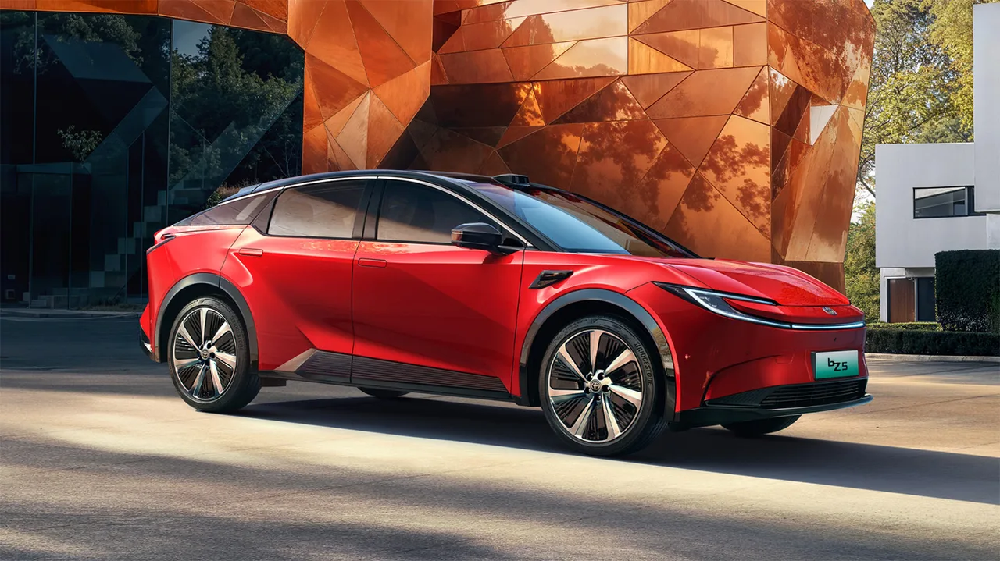

▲ 중국의 한 모터쇼에 마련된 초급속 충전 기술 전시 부스. 중국 도로 위 전기차 비중은 25%까지 올라왔다 ⓒ 오토헤럴드
중국의 친환경차 보급이 예상보다 빠르게 진행되면서, 석유 산업 전반에 구조적인 충격을 주는 조짐이 나타나고 있다. 중국 국가통계국과 기후·에너지 분석 매체 카본브리프(Carbon Brief) 집계에 따르면, 2026년 2분기 중국의 석유 소비는 전년 동기 대비 9% 줄었다. 특히 운송 부문만 놓고 보면 감소폭이 16%에 이른다.
1. 숫자로 보는 감소 폭 — 하루 150만 배럴

▲ 중국 시장에 판매 중인 전기 SUV(참고 이미지). 중국 도로 위 전기차 비중이 25%까지 올라오며 석유 수요를 빠르게 대체하고 있다 ⓒ 토요타
카본브리프 분석에 따르면 2026년 2분기 중국에서만 하루 약 150만 배럴의 석유 소비가 줄었다. 이는 중형 산유국 하나의 하루 생산량과 맞먹는 규모다. 배경에는 전기차뿐 아니라 하이브리드차 보급 확대도 함께 작용했다. 중국 도로 위를 달리는 차량 중 전기차 비중은 25%로, 전년 동기 약 18%에서 큰 폭으로 뛰었다.
2. '데스 스파이럴'이란 — 수요 감소가 부르는 악순환

▲ 대형 석유 시추·저장 시설(참고 이미지). 수요 감소는 유가 하락과 신규 투자 위축으로 이어질 수 있다 ⓒ Wikimedia Commons
기사에서 말하는 '화석연료 데스 스파이럴'은 다음과 같은 악순환 구조를 가리킨다. 중국발 석유 수요 감소가 국제 유가에 하락 압력을 가하고, 낮아진 유가는 정유·산유 기업의 신규 유전 개발 투자를 위축시킨다. 투자가 줄면 장기적으로 공급 능력이 저하되고, 이는 다시 산업 전반의 수익성과 투자 여력을 갉아먹는 구조로 이어진다는 것이다. 세계 최대 석유 수입국 중 하나인 중국의 수요 둔화이기 때문에 그 파급력이 작지 않다는 게 분석의 핵심이다.
3. 정유업계가 마주한 '구조적 수요 파괴'
참고 '구조적 수요 파괴(structural demand destruction)'는 경기 순환에 따른 일시적 수요 감소가 아니라, 기술 전환으로 인해 수요 자체가 되돌아오지 않는 현상을 가리키는 표현이다.
카본브리프는 이번 감소세를 두고 석유 산업이 단순한 경기 둔화가 아니라 '구조적 수요 파괴'에 직면하고 있다고 진단했다. 전기차와 하이브리드차로의 전환은 경기가 회복된다고 해서 다시 내연기관 중심으로 되돌아가지 않는 비가역적 흐름이기 때문이다. 이는 정유회사들의 장기 설비 투자 계획, 나아가 산유국들의 재정 계획에도 영향을 줄 수 있는 변수로 지목된다.
4. 중국만의 이야기는 아니다

▲ 내연기관 정비 장면(참고 이미지). 전기차·하이브리드 확산은 자동차 연료뿐 아니라 정비 산업 구조에도 영향을 준다 ⓒ CarPrism
중국은 세계 최대 자동차 시장이자 주요 석유 수입국이라는 점에서, 이곳의 수요 변화는 국제 유가와 에너지 시장 전반에 직접적인 영향을 미친다. 유럽과 미국에서도 전기차 보급이 이어지고 있는 만큼, 중국의 이번 사례는 다른 지역에서도 비슷한 흐름이 뒤따를 수 있다는 신호로 해석될 여지가 있다.
5. 정리 — 전환의 속도가 예상보다 빠르다
체크포인트
- 중국 2분기 석유 소비 감소(9%)는 전기차·하이브리드 보급 확대가 직접적인 원인으로 지목된다.
- 수요 감소 → 유가 하락 → 신규 투자 위축으로 이어지는 '데스 스파이럴' 구조가 우려되고 있다.
- 이는 일시적 경기 요인이 아니라 구조적·비가역적 전환으로 평가된다는 점에서 정유업계의 장기 전략 수정이 불가피하다.
전기차 전환이 자동차 산업을 넘어 에너지 산업 전반의 판을 흔드는 단계에 접어들었다는 것이 이번 수치가 보여주는 가장 큰 시사점이다.